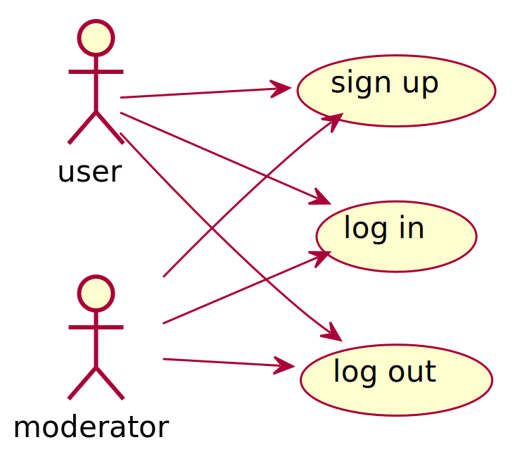
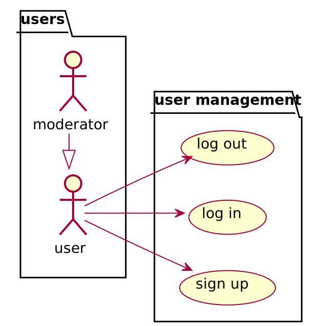

Unified Modeling Language
gergo.pinter@uni-corvinus.hu
structural
- statement
- condition
- iteration
a = 4.2
a = a * 10if a > 17
a -= 5
else:
a += 5for i in range(10):
print(i)for (var i = 0; i < 10; i++) {
console.log(i);
}


procedural - example

def power(a, b):
r = a
for _ in range(b - 1):
r *= r
return r
a = 3
a = power(a, 3)Unified Modeling Language
- UML 2.0 released in 2005
- latest revision in 2017
- ISO/IEC 19501 standard
- designed to be a complete language of software modelling
- UML 2 has 14 diagrams in two categories: structure and behavior
most software developer do not use UML (in a formal way), but hand drawn sketches which often include UML elements [2]

use case diagram - example



relations

{kind=link}
- association: structural relationship
- allows one object instance to cause another to perform an action on its behalf
- realization: e.g., class implements a interface
- aggregation: “has a” relation
- without life cycle control
- composition: stronger form of aggregation
- where the aggregate controls the lifecycle of the elements
class diagram - example

object diagram
- special case of a class diagram
- graphical representation of the objects and their
relationships
at a specific moment in time - provides a snapshot of the system’s structure
- does not show anything architecturally different to class diagram

component diagram
- depicts the component structure and relations
- highlighting the interfaces

state diagram - example


activity diagram
- graphical representations of workflows
- similar to flowcharts
- but uses UML notation
- and can visualize parallel processing
- has more features


sequence diagram

- shows process interactions arranged in time sequence
- depicts the processes and objects involved and the sequence of messages exchanged
- instead of the inner parts of a system, message exchange between software systems can be depicted